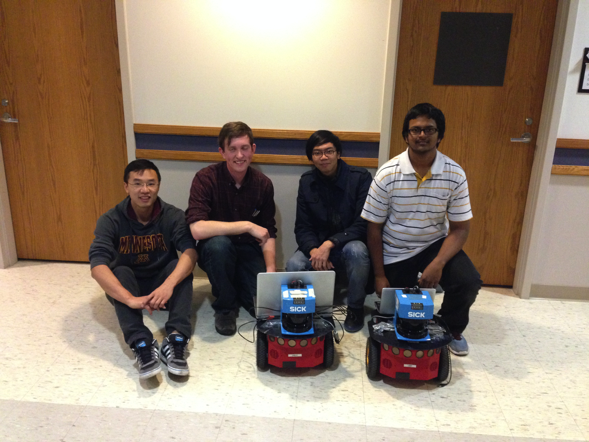

About
[CV] [Resume][Please refer to my Resume/CV/github for new projects. I have been lazy updating this site...]
I am currently pursuing MS in EE at University of Southern California, specializing in Data Science. I received my B.S. degree in Computer Science and Electrical Engineering from National Tsing Hua University (NTHU) in 2015. During my time at NTHU, I was the vice president and Cello principal of NTHU orchestra, chanselor of NTHU student council and an activist of Tsinghua residential college. I am also a member of Phi Tau Phi Honorary Society.
I also have the privilege to spend one semester at University of Minnesota in 2014 as an exchange student, where I had wonderful experience in collaborating beyond country borders and immersing myself in American life. The coursework at Minnesota broadened my horizon in Computer Science and invigorated my interest in edgy areas like Robotics.
During 2012 summer, I received scholarship and as aresult had a chance to attend Tsinghua University's summer semester. I built a "Five in a Row" board game using C++-based Qt and a raw search engine using Python.
Contact Info


Research Experience and Interests
At USC, I work with Prof. Stefan Scherer. We design and train an end-to-end conversation quality assessment system using small segments of text. Other than this, we also apply the same technique on alchoholism treatment outcome prediction.
I also work with Dr. Chris Mattmann on using Deep Learning approach to recognize MIME types based on file byte frequency histograms.
During my undergrad, I worked on Image Change Detection with Prof. Min Sun and job scheduling on HPC clusters with Prof. Jerry Chou.
My current research interest lies in the understanding and modeling of human dynamics and the development of math tools to help interpretability of models and for decision-making.
[Ideas about future]Recent News
"Learning Dyadic Attention Networks to Predict Outcomes of Motivational Interviewing" X. Huang, L. Liu, M.-C. Chiu, J. Woolley, S. Scherer and B. Borsari. Submitted to NAACL 2018
Silver Medal (top 4% out of 5,332 teams) in Kaggle Porto Seguro’s Safe Driver Prediction competition, Nov. 2017
Attended The Data Open Datathon, Pasadena (80 out of over 600 contestants) sponsored by Citadel, Oct. 2017
Viterbi Art Competition, Ming Hsieh Institute -- Attending Prize, Sep. 2017
